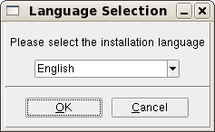
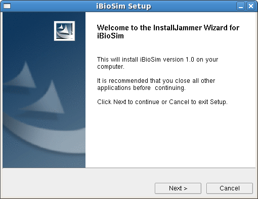
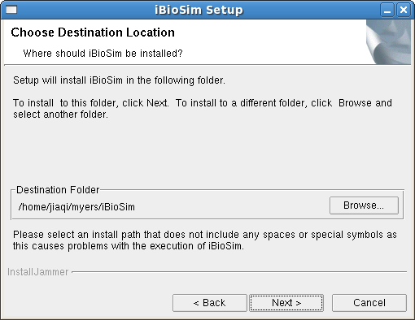
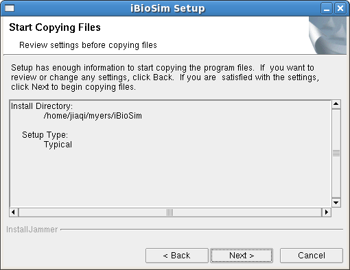

iBioSim Installation Instructions
Chris J. Myers
Contents
1 General Requirements
2 Java Installation
3 MacOS Installation
4 Windows Installation
5 Linux Installation
1 General Requirements
There are versions of iBioSim available for Windows, Linux, and
MacOS. You can download the appropriate installation file from:
http://www.async.ece.utah.edu/iBioSim.
iBioSim requires that you have
Java Runtime Environment 1.6
or higher install on your system. It is also useful to have
Graphviz.
Also, you should associate files with a ".dot" extension with the
Graphviz tool, and files with the ".xhtml" extension to your
web browswer. There is also a pure java version available that
supports most though not all features of iBioSim. This is a good option when having trouble with the other installations, since it is machine independent.
2 Java Installation
To install the pure Java version, you need to download iBioSim-2.8-Java.zip and unzip it in the directory you wish to install. The iBioSim.jar file should be executable, but may require being invoked using the explicit command: java -jar iBioSim.jar.
The iBioSim.mac64 script makes it look better on Mac environment.
3 MacOS Installation
To install on MacOS, you need to download
iBioSim-〈version〉-MacOS.dmg file. You should then
open this file with DiskImageMounter.app. This should open up
this disk image in finder. You should then copy the contents of
this disk image to your Applications folder. You should then be able
to start iBioSim by double-clicking on this application.
4 Windows Installation
Download and execute iBioSim-〈version〉-Setup.exe.
The installation uses InstallJammer. It first asks you for your
preferred installation language. Make your selection and press OK.

The next screen tells you that you what version you are installing.
Press Next to continue.

Next, it ask you for an installation location. Please make sure to
select a path that does not have any spaces or special symbols as
these cause problems with iBioSim.

You are now ready to install. Press Next to continue.

You are all done. Press Finish. If selected, iBioSim
will launch immediately. Otherwise, you can start it using your
desktop shortcut or from your start menu.
 In your start menu, there should be an option to uninstall. If you
select this, it will ask if you are sure then proceed to completely
remove iBioSim from your system. It is highly recommended that
you remove iBioSim using this uninstall procedure before
installing a new version.
In your start menu, there should be an option to uninstall. If you
select this, it will ask if you are sure then proceed to completely
remove iBioSim from your system. It is highly recommended that
you remove iBioSim using this uninstall procedure before
installing a new version.
5 Linux Installation
Since InstallJammmer is also used for the Linux install, the
installation instructions are essentially the same.
First, download iBioSim-〈version〉-Linux-x86_64-Install.
Open a terminal and browse to where this file was download. You must
make this file executable:
chmod u+x iBioSim-〈version〉-Linux-x86_64-Install.
You should then execute this file:
./iBioSim-〈version〉-Linux-x86_64-Install.
This starts InstallJammer. It first asks you for your
preferred installation language. Make your selection and press OK.
The next screen tells you that you what version you are installing.
Press Next to continue.
Next, it ask you for an installation location. Please make sure to
select a path that does not have any spaces or special symbols as
these cause problems with iBioSim.
You are now ready to install. Press Next to continue.
You are all done. Press Finish. If selected, iBioSim
will launch immediately. Otherwise, you can start it using your
desktop shortcut or from your start menu.
In your start menu, there should be an option to uninstall. If you
select this, it will ask if you are sure then proceed to completely
remove iBioSim from your system. It is highly recommended that
you remove iBioSim using this uninstall procedure before
installing a new version.
Note that since there are a large number of different linux installations, there can be problems especially with older installations. If you are having problems though, first log out and back in. There are some environment variables that need to be set. If you are still having problems, then read on.
Our linux installations are currently built for 32-bit and 64-bit versions of Fedora 15. While the Java parts of our program port smoothly, there are often issues with the dynamic libraries and the C/C++ programs reb2sac and GeneNet. If you are having a problem, the first step is to download and build libsbml Version 5.0. You will need to replace the libsbml.so* and libsbmlj.so files with your build of libsbml in either lib or lib64 depending on whether you are using a 32-bit or 64-bit machine. At this point, you should be able to start iBioSim. However, if you are still having problems, send an email to myers@ece.utah.edu including information about your OS and any error messages when you try to execute iBioSim from the command line.
You should also now test reb2sac and GeneNet. In your install directory, try the following:
- cd bin
- export LD_LIBRARY_PATH=$BIOSIM/lib:$LD_LIBRARY_PATH
Note that this is for bash shell, so you may need to change for your shell, if not bash.
- ./reb2sac
- ./GeneNet
You should see the usage lines for these programs. If you do not, you may need custom builds, contact myers@ece.utah.edu.
File translated from
TEX
by
TTH,
version 3.81.
On 25 Jan 2015, 15:49.